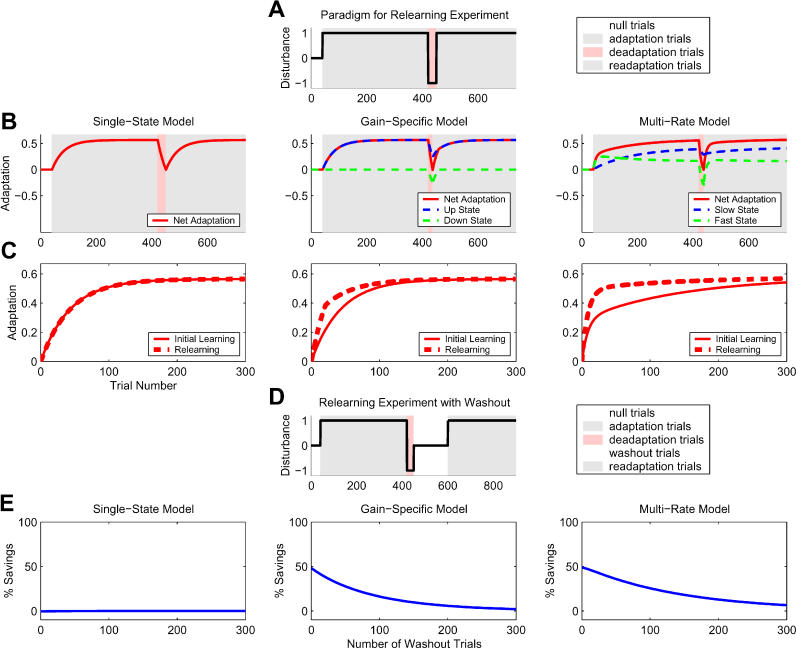

Internal Models and Two-Speed Adaptation
Part of a series on sensorimotor neuroscience and robot learning: impedance · internal models · optimal feedback control · touch and grip · synergies and primitives · population dynamics.
To move well with delayed, noisy senses, the brain predicts. It runs forward models that map motor commands to their consequences and inverse models that map desired consequences to commands, and it keeps both up to date with learning processes that run at different speeds. Robot learning has rebuilt most of these ideas under other names: world models, system identification, rapid motor adaptation, mixtures of experts.
1. Learning a new dynamics: force fields and after-effects
Shadmehr and Mussa-Ivaldi (1994) had subjects reach while a robot handle applied a velocity-dependent force perpendicular to the hand's motion. Paths that started curved became straight over practice. When the field was unexpectedly switched off, the paths curved the other way: mirror-image after-effects. Subjects had not simply stiffened; they had learned to predict and cancel the field, an internal model of the new dynamics. How that learning generalised across the workspace suggested it was represented in joint-based, intrinsic coordinates.
2. Forward models for estimation
Sensory feedback arrives late, tens of milliseconds for proprioception and longer for vision, which is too slow to estimate where a fast-moving hand is right now. Wolpert, Ghahramani and Jordan (1995) asked subjects to judge the position of their unseen hand after movements under assistive or resistive forces. The bias and variance of their estimates over time were explained by a Kalman filter that combines a forward-model prediction from the motor command with delayed sensory feedback:
$$\hat x_{t+1} = \underbrace{A\hat x_t + Bu_t}_{\text{forward model}} + L_t\big(y_{t+1} - C(A\hat x_t + Bu_t)\big).$$This is the same structure as a robot's state estimator: a dynamics model propagates the state, sensors correct it, and the gain trades their noise. Wolpert, Miall and Kawato (1998) reviewed evidence that the cerebellum implements such predictive models.
3. Many models, one controller
People switch effortlessly between tools and objects with very different dynamics. MOSAIC (Wolpert and Kawato 1998) proposes many paired forward and inverse models. Each forward model's prediction error determines a "responsibility" signal, and the motor command is the responsibility-weighted blend of the inverse models' commands. Learning updates each pair in proportion to its responsibility. In modern terms it is a mixture of experts gated by how well each expert predicts the present, which is close to what a robot needs when the object in its hand changes.
4. Two learners at two speeds
Motor adaptation shows savings (relearning is faster than learning) and spontaneous recovery (after adapting and then briefly de-adapting, behaviour drifts back toward the first adaptation when error feedback is removed). Smith, Ghazizadeh and Shadmehr (2006) explained both with two linear processes driven by the same error \(e_n = f_n - x_n\):
$$x^f_{n+1} = A_f\,x^f_n + B_f\,e_n,\qquad x^s_{n+1} = A_s\,x^s_n + B_s\,e_n,\qquad x_n = x^f_n + x^s_n,$$with a fast process that learns and forgets quickly (\(A_f = 0.92, B_f = 0.03\)) and a slow one that learns and forgets slowly (\(A_s = 0.996, B_s = 0.004\)). After long adaptation the slow state holds most of the learning; a short de-adaptation drives the fast state negative and the net output to zero; in an error clamp the fast state decays away first, revealing the slow state underneath. Figure 1 reruns their model with their parameters.

5. The same ideas in robot learning
- Forward models. Learned world models predict the consequences of actions and are used for planning or for training a policy in imagination; state estimators fuse a dynamics model with sensors exactly as in Section 2.
- Fast adaptation of a latent. Rapid Motor Adaptation (Kumar et al., RSS 2021) learns, in simulation, a policy conditioned on hidden physical parameters, then infers those parameters online from recent state–action history. That is a fast process on top of slowly learned weights. My adaptation review covers its descendants.
- Mixtures and context. Context-conditioned and mixture-of-expert policies select behaviour by how well each mode explains the present, the MOSAIC idea with neural networks.
6. What robotics has not taken yet
- Two timescales with different forgetting. Robot adaptation modules usually have one memory. The two-rate structure predicts, and explains, both quick reversibility and long retention; an online adapter with an explicit fast-forgetting and slow-retaining split is a small, testable change.
- Responsibility from prediction error. Gating by forward-model accuracy is a principled way to switch dynamics models when a robot grasps a new object, and it is measurable on the robot's own sensors.
- After-effects as a test. Switching a perturbation off and looking for mirror-image errors is a clean way to tell whether a robot learned a model of the disturbance or merely stiffened against it.
References
| Reference | Venue |
|---|---|
| Shadmehr, Mussa-Ivaldi, Adaptive representation of dynamics during learning of a motor task | J. Neurosci. 14, 1994 |
| Wolpert, Ghahramani, Jordan, An internal model for sensorimotor integration | Science 269, 1995 |
| Wolpert, Kawato, Multiple paired forward and inverse models for motor control | Neural Networks 11, 1998 |
| Wolpert, Miall, Kawato, Internal models in the cerebellum | Trends Cogn. Sci. 2, 1998 |
| Smith, Ghazizadeh, Shadmehr, Interacting adaptive processes with different timescales underlie short-term motor learning | PLoS Biol. 4, 2006 |
| Kumar et al., RMA: Rapid Motor Adaptation for Legged Robots | RSS 2021 |